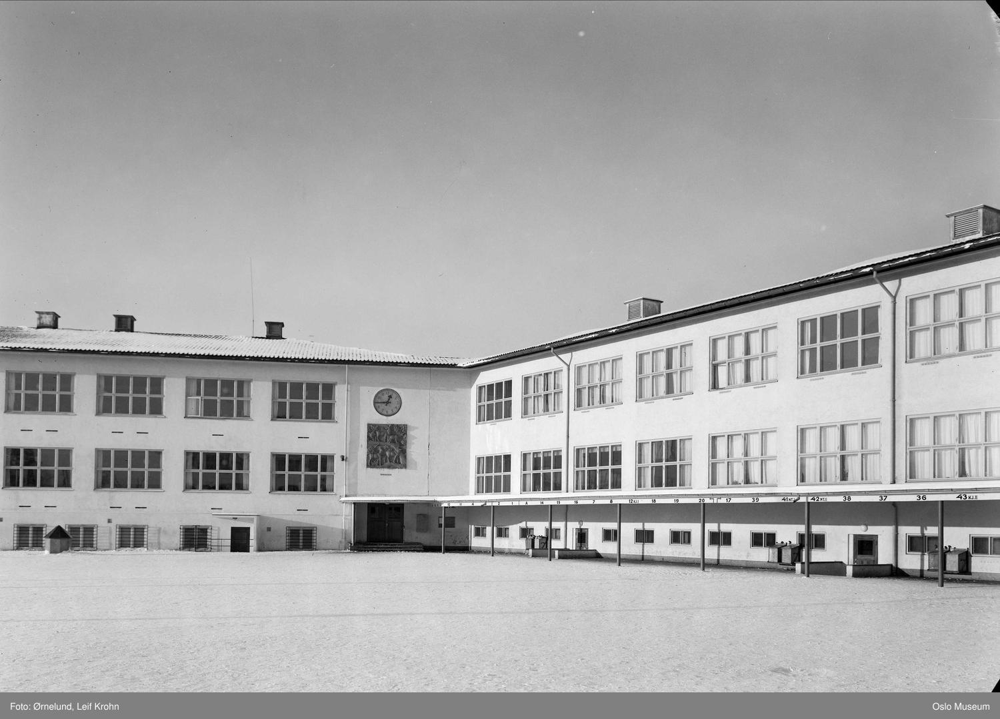
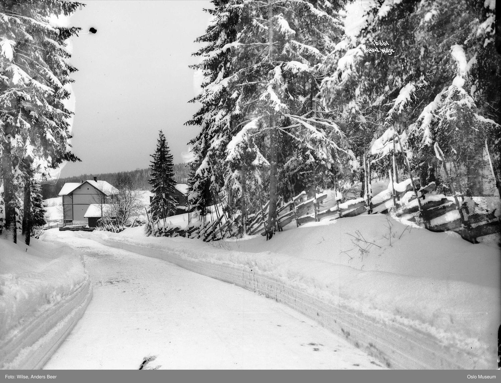
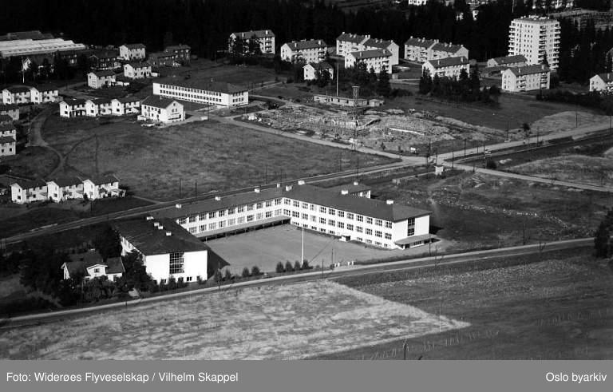

Et skolehus som ble til et helt kvartal
Шкільний будинок, що виріс у цілий квартал
Det var morgen, 10. februar 1862, da 56 barn for første gang gikk inn dørene til et nytt, tømret skolehus ved Sørkedalsveien. To skolerom, to lærerleiligheter, loft og kjeller – det var hele Huseby skole den gangen. I dag, over 160 år senere, står skolen fortsatt på samme sted, men er vokst til et helt kvartal med bygninger fra fem ulike tidsaldre.

Et tømret skolehus fra 1861
Bakgrunnen var et vedtak i Aker kommunestyre 3. november 1858 om å bygge 14 nye, faste skoler i herredet. Huseby var en av dem. Skolehuset ble reist i 1860–61 etter tegninger av sivilingeniør Oluf Nicolai Roll – et laftet trehus i sveitserstil med ett plan, loft og kjeller. Inne var det to skolerom på 42 og 28 kvadratmeter og to leiligheter til lærerne. Den første skoledagen, 10. februar 1862, møtte 56 elever fordelt på to klasser. Ole Christian Hansen var skolens første lærer (1862–1866), og fra 1882 fikk skolen sin første kvinnelige lærer, Dina Larsen Hovind.
Navnet kommer fra gården over veien
Skolen har navnet sitt fra Nordre Huseby gård, som lå rett over Sørkedalsveien. Huseby er ett av de eldste gårdsnavnene vi har – det norrøne husabýr ble ofte brukt om gamle administrasjons- eller kongsgårder. Selve gårdsbygningene ble revet i 1984, da området ble gjort om til Huseby leir, men navnet lever videre i skolen, i T-banestasjonen og i hele strøket.

Murbygg, gymsal og stadig flere barn
Trehuset ble fort for lite. I 1907 var elevtallet steget til 134, og i 1910 sto et nytt murbygg ferdig, tegnet av kommunens bygningssjef Harald Bødtker, med fire klasserom, skolekjøkken og håndarbeidsrom. Barna fortsatte å strømme til: i 1933 var de 205. To år senere, i 1935, ble 1910-fløyen kraftig bygget om av arkitekt Georg Greve, som føyde til gymnastikksal, vestibyle og legekontor. Etter krigen, i 1948, kom en ny midtfløy og østfløy i funksjonalistisk stil. Elevtallet nådde toppen i 1957 med hele 1404 barn på skolen. I 1951 fikk Huseby et eget skolebibliotek i samarbeid med Deichmanske bibliotek, med lesesal og åpent to dager i uka. Skolen hadde ungdomstrinn i årene 1968–84, og senest i 2016 kom «Superkubebygget» med sju nye klasserom.

Skolen under krigen
Den 9. april 1940 ble skolen stengt, men den åpnet igjen alt to dager senere. Verre ble det da tysk militær tok over bygningen i mai 1941, og fra januar 1942 var hele skolen rekvirert og brukt som kaserne. Undervisningen måtte gå skiftvis og i lånte lokaler – blant annet på Fossum skole i Bærum og i Røa menighetshus. Under lærerstriden, da okkupasjonsmakten forsøkte å tvinge lærerne inn i en nazistisk lærerorganisasjon, ble flere av skolens mannlige lærere arrestert; en av dem, Erik Gaupås, ble deportert. Da freden kom i 1945, var skolen så overfylt at 20 klasser måtte dele åtte klasserom.
Et levende skolemiljø
Huseby har alltid vært mer enn klasserom. Allerede 6. juni 1921 ble Huseby Skoles Musikkorps stiftet, og generasjoner av elever har gått ut herfra – blant dem komiker Jonna Støme, skuespiller Marianne Westby og langrennsløper Martin Johnsrud Sundby. De eldste bygningene er i dag listeført som verneverdige i Verneplan for Osloskolene. Står du ved Sørkedalsveien 167 i dag, ser du derfor ikke bare en skole, men et stykke Vestre Aker-historie som har vært i sammenhengende bruk i over 160 år.
Був ранок 10 лютого 1862 року, коли 56 дітей уперше зайшли у двері нового зрубного шкільного будинку біля Sørkedalsveien. Дві класні кімнати, дві вчительські квартири, горище й підвал — оце й була вся школа Huseby на той час. Сьогодні, понад 160 років по тому, школа стоїть на тому самому місці, але розрослася в цілий квартал будівель п’яти різних епох.
Зрубний шкільний будинок 1861 року
Передумовою стало рішення муніципальної ради Aker від 3 листопада 1858 року збудувати в окрузі 14 нових постійних шкіл. Huseby була однією з них. Шкільний будинок звели у 1860–61 роках за проєктом цивільного інженера Oluf Nicolai Roll — зрубну дерев’яну споруду у швейцарському стилі з одним поверхом, горищем і підвалом. Усередині були дві класні кімнати площею 42 і 28 квадратних метрів та дві вчительські квартири. Першого навчального дня, 10 лютого 1862 року, прийшло 56 учнів, поділених на два класи. Ole Christian Hansen був першим учителем школи (1862–1866), а з 1882 року школа отримала першу вчительку — Dina Larsen Hovind.
Назва походить від садиби через дорогу
Свою назву школа отримала від садиби Nordre Huseby gård, що стояла прямо через Sørkedalsveien. Huseby — одна з найдавніших назв садиб, які ми маємо: давньоскандинавське husabýr часто позначало старі адміністративні або королівські садиби. Самі будівлі садиби знесли у 1984 році, коли територію перетворили на військовий табір Huseby leir, але назва живе далі — у школі, у станції метро та в усьому районі.
Цегляний корпус, спортзал і дедалі більше дітей
Дерев’яний будинок швидко став затісним. У 1907 році кількість учнів зросла до 134, а в 1910 році постав новий цегляний корпус за проєктом міського будівничого Harald Bødtker — із чотирма класними кімнатами, шкільною кухнею та кімнатою для рукоділля. Дітей більшало: у 1933 році їх було 205. Через два роки, у 1935-му, корпус 1910 року суттєво перебудував архітектор Georg Greve, додавши спортзал, вестибюль і лікарський кабінет. Після війни, у 1948 році, з’явилися нові центральний і східний корпуси у функціоналістичному стилі. Кількість учнів сягнула піку в 1957 році — аж 1404 дитини. У 1951 році Huseby отримала власну шкільну бібліотеку у співпраці з бібліотекою Deichman, із читальною залою, відкритою двічі на тиждень. У 1968–84 роках у школі був і середній ступінь, а вже у 2016 році з’явився «Superkubebygget» із сімома новими класами.
Школа під час війни
9 квітня 1940 року школу зачинили, але вже за два дні вона знову відчинилася. Гірше стало, коли в травні 1941 року будівлю зайняли німецькі військові, а з січня 1942 року всю школу реквізували й використовували як казарму. Навчання доводилося вести позмінно та в позичених приміщеннях — зокрема в школі Fossum у Bærum і в парафіяльному домі Røa. Під час «вчительського спротиву» (Lærerstriden), коли окупаційна влада намагалася змусити вчителів вступити до нацистської вчительської організації, кількох учителів-чоловіків школи заарештували; одного з них, Erik Gaupås, депортували. Коли в 1945 році настав мир, школа була така переповнена, що 20 класів мусили ділити вісім класних кімнат.
Живе шкільне середовище
Huseby завжди була чимось більшим за класні кімнати. Ще 6 червня 1921 року тут заснували духовий оркестр школи (Huseby Skoles Musikkorps), і покоління учнів вийшли звідси у світ — серед них комік Jonna Støme, акторка Marianne Westby та лижник Martin Johnsrud Sundby. Найстаріші будівлі сьогодні внесені до переліку охоронюваних у Плані охорони шкіл Осло (Verneplan for Osloskolene). Тож, стоячи біля Sørkedalsveien 167 сьогодні, ви бачите не просто школу, а частку історії Вестре-Акер, яка безперервно діє вже понад 160 років.
Kilder
Her er du
Slik blir du med på jakten
Finn stolpene rundt om i Vestre Aker, skann QR-koden og les historien om hvert sted. Velg et kallenavn – så samler du poeng for hvert nye sted du besøker. Ingen innlogging, ingen app.
Se kart og kom i gang